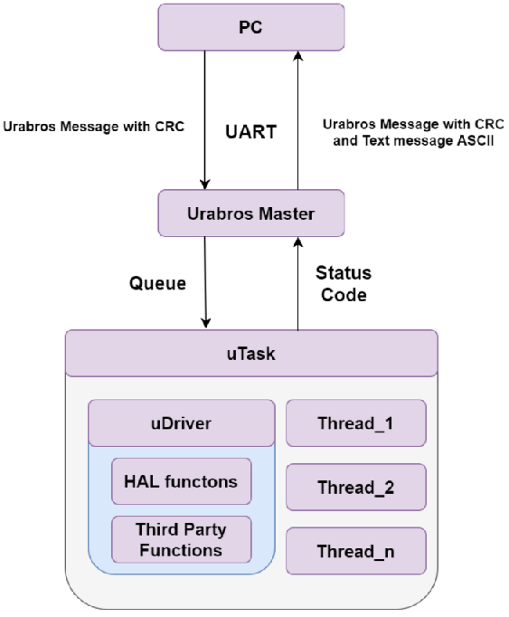
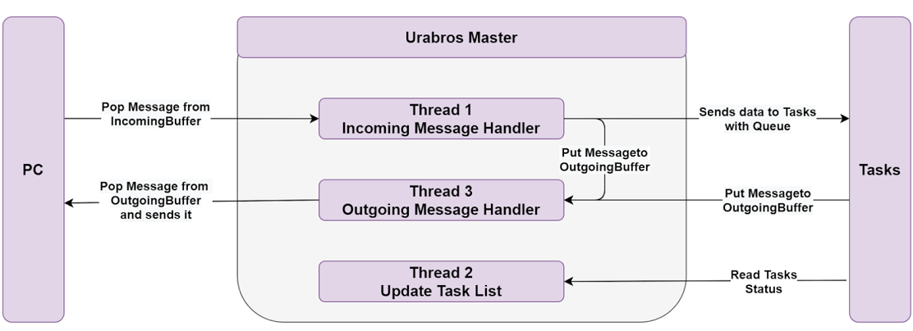
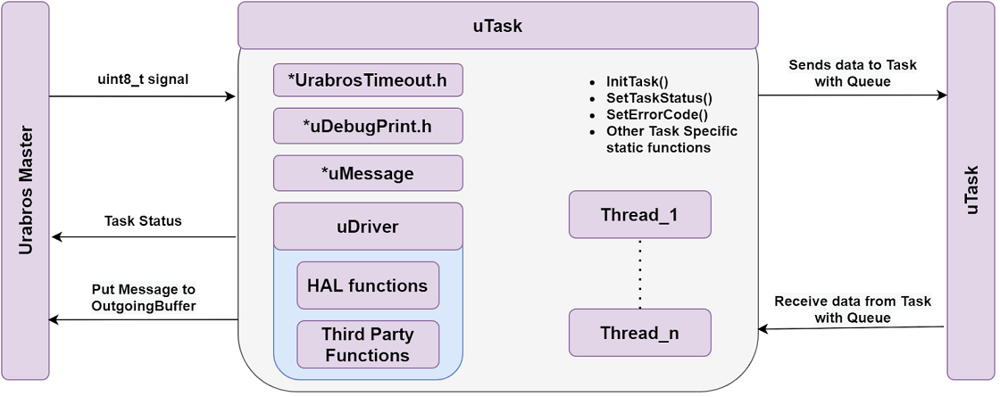
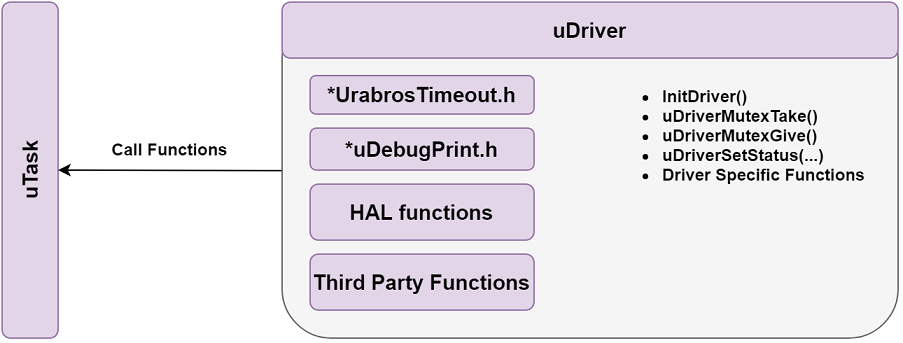
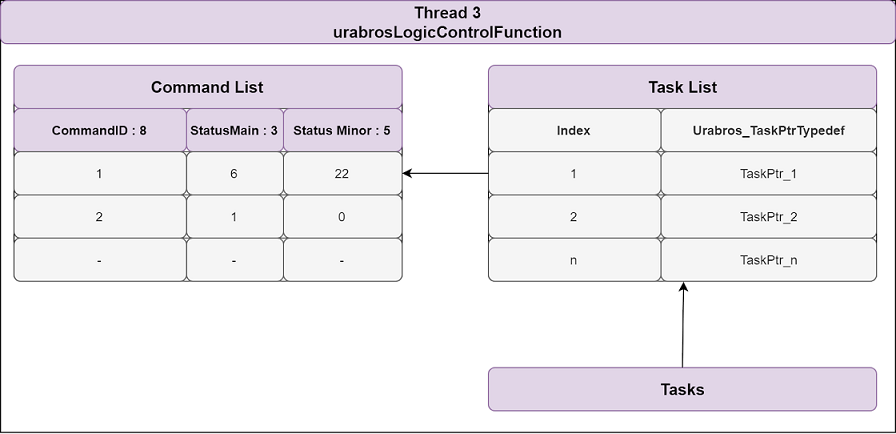
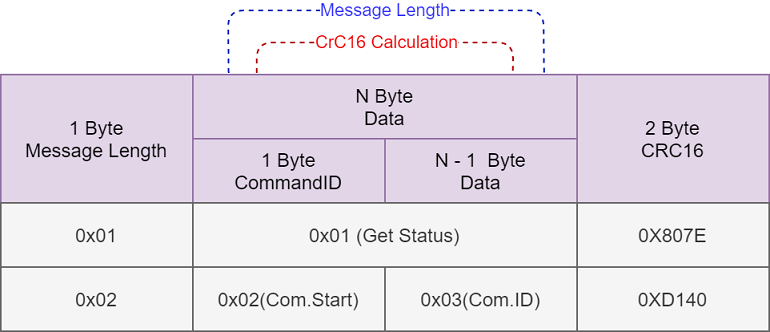
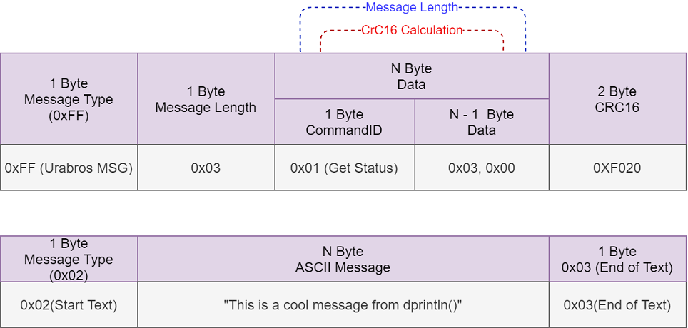

|
Urabros
2.0.0
|
|
Urabros
2.0.0
|
Urabros Framework created for STM32 MicroControllers. Owned by MechatroMotive Kft.
This framework is wrapper for FreeRTOS system, giving us a lot usefull features.
The main idea behind it is that there is a driver PC or MC what can start stop resume delete Tasks (we call it uTask).
A task is responsible for a well described process. Forexample: An uTask for vending machine: Give me two minerall water bottles.
There are some diagrams about the most important parts of the system.

PC - It is a computer but it can be an another Microcontroller too, the important thing itis the Master in this setup.
It sends down urabros commands to the MC to start stop resume delete tasks.
It gets urabros message or AXCII message from the MC
Urabros Master - It is the main logic of the MC side. It is the bridge between uTasks and PC
uTask - Abstraction layer for a well described process.
uDriver - Driver handler for ensure multiple task could use singel hardware part without problem.

See detailed informations at UrabrosMaster.h and UrabrosMaster.c
Incoming Message Handler
found as urabrosCommunicationFunction() is responsible for handling the incoming uMessages.
It starts uTasks and send them other data if needed.
It can add or delete commands to/from command list.
It creates the response message and place it in to the outgoing buffer.
Outgoing Message Handler
found at urabrosMessageSenderFunction() handles the outgoing messages.
uMessages are the topp priority, if there are no more uMessage to be send than, it can send out ASCII debug messages if there are some in the buffer.
Update Task List
found at urabrosLogicControlFunction() it updates the statuses in the commandlist, depending on the acttive uTasks's statuses.

More detailed description at: UrabrosTask.h
Abstraction layer for a well described process. Forexample on a vending machine: give me one bottle.
It has at least one FreeRTOS thread, but it can handle more than one.
It has two tpes see here: Urabros_TaskMode
It can use uDrivers, dont use Low level acces things in uTask it is designed to be a high level process descriptor.

More detailed description at: UrabrosDriver.h
It contains a high level functions for a Hardware group, what has a well described process.
For example a conveyor has some stepper motors and some sensors. And a driver for this conveyor could have a function like: bringStuff(num of stuffs)
Than the caller enviroment dont have to mess with the low level HAL functions.
Multiple uTasks cna use the smae uDriver, but it has a mutex to ensure the thread safety.

More detailed description at: uCommandHandler.h
There are two important Arrays from the communication view. One is shared between the PC and the MC we call it commandList. uCommandList
The other one is for collecting all the uTasks we call it TaskList. uTasks
The TaskList holds all the task pointers and it is refreshed by the urabrosLogicControlFunction().
The commandList holds all actie tasks and it's statuses. The status is separated to two parts main: 3 bit and minor:5bit see at: Urabros_CommandStatusTypeDef
The main status can be on;y predefined values with predefined meanings: Urabros_TaskStatusTypeDef minor can be 0 - 31 and its meaning is different for each uTasks.

Communication protocol for the PC --> MC communication part.
Starts with a message length it is 1 byte long so the maximum size is 255. If it is necesary it can be modified to 2 byte.
Than following is the Data, where the first byte is the Command Type, IDs can be found here: Urabros_CommandType.
The second byte of the data usually is the uTasks ID, it is created by the Architect: #Urabros_CommandIdTypedef
The last two bytes are the 16 bit CRC code.

Communication protocol for the MC --> PC communication part.
It has two different types, the one is kinda similar to the PC-->MC part the other one is the ASCII debug messages. The first byte is identify what kind of message will arrive. 0x02 for debug and 0xff for uMessage type. At the comerical message the second byte is the length of the data, than comes the data than the crc code. At the debug message, from second to n bytes are ASCII characters than at the end 0x03 end of text byte
Currently there are no installers and guides for this project.
Only one distribution exists and it is for STM32H743ZG.
There is a plan for make 3 different distribution for 3 different processors.
Also there was a plan to make a python script what can generate the root fo the project by its configuration files.
GitLab can be found here: https://gitlab.com/mechatromotive/stm_alapproject/urabrosbase
GitLab link for Tester Software: https://gitlab.com/mechatromotive/stm_alapproject/urabrospctester
A presentation can be found here: https://docs.google.com/presentation/d/11Pq8FH_6TniGk-a71UukzcWwtIFbn8kGXkAyz0OQdaM/edit?usp=sharing
Teaching video materials can be found here: https://drive.google.com/drive/folders/1AwxLzu131hiJ3a7aJf_DGWWKowJSSK9-
Last updated documentation link: https://mechatromotive.gitlab.io/stm_alapproject/urabrosbase/
Git Branching strategy: https://docs.google.com/document/d/1tIOLicInT9hC2rb7sQhW4ad07fyY0dUoD0kYspKARX4/edit?usp=sharing